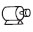

Building Automation
Industrial Automation
Power Automation & Safety


Bangladesh Distributor
 Cautions
Cautions
-
Relays
-
General Purpose Relays
- Solid-state Relays
-
Power Controllers
-
Solid-state Relays
|
|
|
|
| Safety Precautions |
Refer to the Safety Precautions for individual SSRs for precautions specific to each SSR.
Do not touch the SSR or the heat sink while the power is being supplied or immediately after the power supply has been turned OFF.
Touching the SSR or heat sink while it is hot may result in burns.
Do not touch the LOAD terminals on the SSR immediately after the power supply has been turned OFF.
Shock may result due to the electrical charge stored in the built-in snubber circuit.
Always attach the cover terminal if the SSR has one.
Contact with current-carrying parts may result in shock.
Always turn OFF the power supply before performing wiring.
Not doing so may result in shock.
Do not allow short-circuit current to flow to the load side of the SSR.
The SSR may explode if short-circuit current flows.
Precautions for Safe Use
OMRON constantly strives to improve quality and reliability. SSRs, however, use semiconductors, and semiconductors may commonly malfunction or fail. Short-circuit failures represent the main failure mode and can result in an inability to shut OFF the load. Therefore, for fail-safe operation of control circuits that use SSRs, do not use circuits that shut OFF the load power supply only with an SSR, but rather also use circuits with a contactor or breaker that shuts off the load when the SSR fails. In particular, it may not be possible to ensure safety if the SSRs are used outside the rated ranges. Therefore, always use the SSRs within the ratings.
When using an SSR, always design the system to ensure safety and prevent human accidents, fires, and social harm in the event of SSR failure. System design must include measures such as system redundancy, measures to prevent fires from spreading, and designs to prevent malfunction.
1.Do not apply voltage or current in excess of the ratings to the terminals of the SSR. Doing so may result in failure or burn damage.
2.Heat Radiation
Be careful with the increase in ambient temperature caused by self-heating. Mount a fan etc. to provide a sufficient air ventilation especially in case of internal mounting.
Mount the SSR following the specified mounting orientation.
The abnormal heat generation from the body may cause output elements to short or may cause burning.
3.Perform correct wiring following the precautions below.
Improper wiring may lead to abnormal heating resulting in burn damage to the SSR once the power is supplied.
Use a suitable wire according to the load current. Otherwise the abnormal heating of the wire may cause burning.
4.Operating Conditions
Designate the load within the rated range. Otherwise it may result in faulty operation, malfunction, or burning.
Use a power supply within the rated frequency range.
Otherwise it may result in faulty operation, malfunction, or burning.
5.Do not transport the SSR under the following conditions. Failure, malfunction, or deterioration of performance characteristics may occur.
Conditions under which the SSR will be exposed to water
High temperatures or high humidity
Without proper packing
6.Operating and Storage Environment
Do not use or store the SSR in the following environments. Doing so may result in damage, malfunction, or deterioration of performance characteristics.
Do not use or store in environments subject to exposure to sunlight.
Do not use in environments subject to temperatures outside the range specified individually.
Do not use in environments subject to relative humidity outside the range of 45% to 85% RH, or in locations subject to condensation as the result of severe changes in temperature.
Do not store in environments subject to temperatures outside the range specified individually.
Do not use or store in environments subject to corrosive or flammable gases.
Do not use or store in environments subject to dust, salt, or iron dust, or in locations subject to salt damage.
Do not use or store in environments subject to shock or vibration.
Do not use or store in environments subject to exposure to water, oil, or chemicals, or in environments subject to exposure to rain and water splashes.
Do not use or store in environments subject to high temperature or high humidity.
Precautions for Correct Use
Before Actual Operation
1.The SSR in operation may cause an unexpected accident.
Therefore it is necessary to test the SSR under the variety of conditions that are possible. As for the characteristics of the SSR, it is necessary to consider differences in characteristics between individual SSRs.
2.The ratings in this catalog are tested values in a temperature range between 15°C and 30°C, a relative humidity range between 25% and 85%, and an atmospheric pressure range between 88 and 106 kPa. It will be necessary to provide the above conditions as well as the load conditions if the user wants to confirm the ratings of specific SSRs.
Input Circuit
Input-side Connection
There is variation in the input impedance of SSRs. Therefore, do not connect multiple inputs in series. Otherwise malfunction may occur.
Input Noise
SSRs need only a small amount of power to operate. This is why the input terminals must shut out electrical noise as much as possible.
Noise applied to the input terminals may result in malfunction. The following describes measures to be taken against pulse noise and inductive noise.
1. Pulse Noise
A combination of capacitor and resistor can absorb pulse noise effectively. The following is an example of a noise absorption circuit with capacitor C and resistor R connected to an SSR.
The value of R and C must be decided carefully. The value of R must not be too large or the supply voltage (E) will not be able to satisfy the required input voltage value. The larger the value of C is, the longer the release time will be, due to the time required for C to discharge electricity.
Note:For low-voltage models, sufficient voltage may not be applied to the SSR because of the relationship between C, R, and the internal impedance. When deciding on a value for R, check the input impedance for the SSR.
2. Inductive Noise
Do not wire power lines alongside the input lines. Inductive noise may cause the SSR to malfunction. If inductive noise is imposed on the input terminals of the SSR, use the following cables according to the type of inductive noise, and reduce the noise level to less than the must release voltage of the SSR.
Twisted-pair wires: For electromagnetic noise
Shielded cable: For static noise
A filter consisting of a combination of capacitor and resistor will effectively reduce noise generated from high-frequency equipment.
Note:R: 20 to 100 Ω
C: 0.01 to 1 μF
Input Conditions
1. Input Voltage Ripples
When there is a ripple in the input voltage, set so that the peak voltage is lower than the maximum operating voltage and the root voltage is above the minimum operating voltage.
2. Countermeasures for Leakage Current
When the SSR is powered by transistor output, the must release voltage may be insufficient due to leakage current of transistor during power OFF. To counteract this, connect bleeder resistance R as shown in the diagram below and set the resistance so that the voltage applied to both ends of the resistance is less than half of the must release voltage of the SSR.
The bleeder resistance R can be obtained in the way shown below.

E : Voltage applied at both ends of the bleeder resistance = half of the must release voltage of the SSR
IL : Leakage current of the transistor
I : Must release current of the SSR
The actual value of the must release current is not given in the datasheet and so when calculating the value of the bleeder resistance, use the following formula.
For SSRs with constant-current input circuits (e.g., G3NA, G3PA, G3PB), calculation is performed at 0.1 mA.
The calculation for the G3M-202P DC24 is shown below as an example.

3. ON/OFF Frequency
An SSR has delay times called the operate time and release time.
Loads, such as inductive loads, also have delay times called the operate time and release time. These delays must all be considered when determining the switching frequency.
4. Input impedance
In SSRs which have wide input voltages (such as G3F and G3H), the input impedance varies according to the input voltage and changes in the input current. For semiconductor-driven SSRs, changes in voltage can cause malfunction of the semiconductor, so be sure to check the actual device before usage. See the following examples.
Applicable Input Impedance for a Photocoupler-type SSR without Indicators (Example)
G3F, G3H (Without Indicators)
Applicable Input Impedance for a Photocoupler-type SSR with Indicators (Example)
G3B, G3F, G3H (With Indicators)
Applicable Input Impedance (Example)
G3CN
Output Circuit
AC ON/OFF SSR Output Noise Surges
If there is a large voltage surge in the AC power supply where SSRs are used, the CR snubber circuit built into the SSR between the SSR load terminals will not be sufficient to suppress the surge, and the SSR transient peak element voltage will be exceeded, causing overvoltage damage to the SSR.
Varistors should generally be added because measuring surges is often difficult (except when it has been confirmed that there is no surge immediately before use).
Built-in surge absorption elements are included only with the G3NA, G3S, G3PA, G3PE, G3PC, G3NE, G3J, G3NH, G9H, G3DZ, G3RZ, and G3FM. When switching an inductive load ON and OFF, be sure to take countermeasures against surge, such as adding a surge absorbing element.
The following is an example of measures in which a surge voltage absorption element has been added.
OMRON confirmed the amount of resistance for the SSR output at the following impulse withstand voltage test conditions.
Conditions:
Between all I/O terminals and heat sink: 6 kV
Between input terminals and output terminals: 4.5 kV
Between output terminals: 4.5 kV
Select an element which meets the conditions in the table below as the surge absorbing element.
| Voltage | Varistor voltage | Surge resistance |
| 100 to 120 VAC | 240 to 270 V | 1,000 A min. |
| 200 to 240 VAC | 440 to 470 V | |
| 380 to 480 VAC | 820 to 1,000 V |
Output Connections
Do not connect SSR outputs in parallel. With SSRs, both sides of the output will not turn ON at the same time, so the load current cannot be increased by using parallel connections.
DC ON/OFF SSR Output Noise Surges
When an L inductive load, such as a solenoid or electromagnetic valve is connected, connect a diode that prevents counterelectromotive force. If the counter-electromotive force exceeds the withstand voltage of the SSR output element, it could result in damage to the SSR output element. To prevent this, insert the element parallel to the load, as shown in the following diagram and table.
As an absorption element, the diode is the most effective at suppressing the counter-electromotive force. The release time for the solenoid or electromagnetic valve will, however, increase. Be sure to check the circuit before use. To shorten the time, connect a Zener diode and a regular diode in series. The release time will be shortened at the same rate that the Zener voltage (Vz) of the Zener diode is increased.
Table 1. Absorption Element Example
| Absorption element |  | |||
| Diode | Diode + Zener diode | Varistor | CR | |
| Effectiveness | ○ | ○ | Δ | × |
(Reference)
1.Selecting a Diode
Withstand voltage = VRM ≥ Power supply voltage × 2
Forward current = IF ≥ Load current
2.Selecting a Zener Diode
Zener voltage = Vz < (SSR's connector − emitter voltage)* − (Power supply voltage + 2 V)
Zener surge reverse power = PRSM > Vz × Load current × Safety factor (2 to 3)
Note:When the Zener voltage is increased (Vz), the Zener diode capacity (PRSM) is also increased.
AND Circuits with DC Output SSRs
Use the G3DZ or G3RZ MOS FET relays for the following type of circuit. Do not use general transistor SSRs, otherwise the circuit may not be reset.
Self-holding Circuits
Self-holding circuits must use mechanical relays. SSRs cannot be used to design self-holding circuits.
Selecting an SSR with Differing Loads
The following provides examples of the inrush currents for different loads.
AC Load and Inrush Current
| Load | Solenoid | Incandescent lamp | Motor | Relay | Capacitor | Resistance load |
 | ||||||
| Inrush current/ Normal current | Approx. 10 times | Approx. 10 to 15 times | Approx. 5 to 10 times | Approx. 2 to 3 times | Approx. 20 to 50 times | 1 |
| Waveform | ||||||
1. Heater Load (Resistive Load)
Load without an inrush current. Generally used together with a voltage-output temperature controller for heater ON/OFF switching. When used with an SSR with zero cross function, suppresses most noise generated. This type of load does not, however, include all-metal and ceramic heaters. Since the resistance values at normal temperatures of all-metal and ceramic heaters are low, an overcurrent will occur in the SSR, causing damage. For switching of all-metal and ceramic heaters, select a Power Controller with a long soft-start time, or a constantcurrent type SSR.
2. Lamp Load
Large inrush current flows through incandescent lamps, halogen lamps, and so on (approx. 10 to 15 times higher than the rated current value). Select an SSR so that the peak value of inrush current does not exceed half the surge withstand current of the SSR. Refer to "Repetitive" (indicated by dashed lines) shown in the following figure. When a repetitive inrush current of greater than half the surge withstand current is applied, the output element of the SSR may be damaged.
3. Motor Load
When a motor is started, an inrush current of 5 to 10 times the rated current flows and the inrush current flows for a longer time. In addition to measuring the startup time of the motor or the inrush current during use, ensure that the peak value of the inrush current is less than half the surge withstand current when selecting an SSR. The SSR may be damaged by counter-electromotive force from the motor when the SSR is turned OFF. Be sure to install overvoltage protection.
4. Transformer Load
When the SSR is switched ON, an energizing current of 10 to 20 times the rated current flows through the SSR for 10 to 500 ms. If there is no load in the secondary circuit, the energizing current will reach the maximum value. Select an SSR so that the energizing current does not exceed half the surge withstand current of the SSR.
5. Half-wave Rectified Circuit
AC electromagnetic counters and solenoids have built-in diodes, which act as half-wave rectifiers. For these types of loads, a halfwave AC voltage does not reach the SSR output. For SSRs with the zero cross function, this can cause them not to turn ON.
Two methods for counteracting this problem are described below.
These two methods, however, cannot be used to switch a halfwave rectified break coil. We recommend using an SSR that is designed to switch DC loads.
Refer to DC-switching SSR Output Noise and Surge and implement countermeasures for counter-electromotive force.
Application is not possible for 200-VAC half-wave rectified circuits (peak voltage of 283 V)
(a)Connect a bleeder resistance with approximately 20% of the SSR load current.
(See the following figure.)
(b)Use SSRs without the zero cross function.
6. Full-wave Rectified Loads
AC electromagnetic counters and solenoids have built-in diodes which act as full-wave rectifiers. The load current for these types of loads has a rectangular wave pattern, as shown in the diagram below.
Accordingly, AC SSRs use a triac (which turns OFF the element only when the circuit current is 0 A) in the output element. If the load current waveform is rectangular, it will result in a SSR reset error. When switching ON and OFF a load whose waves are all rectified, use a -V model or Power MOS FET Relay.
-V-model SSRs: G3F-203SL-V, G3H-203SL-V
Power MOS FET Relay: G3DZ, G3RZ, G3FM
7. Small-capacity Loads
Even when there is no input signal to the SSR there is a small leakage current (IL) from the SSR output (LOAD). If this leakage current is larger than the load release current, the SSR may fail to reset.
Connect the bleeder resistance R in parallel to increase the SSR switching current.
8. Inverter Load
Do not use an inverter-controlled power supply as the load power supply for the SSR. Inverter-controlled waveforms are rectangular.
The extremely large dV/dt may cause the SSR to misfire and prevent it from resetting.
An inverter-controlled power supply may be used on the input side provided the effective voltage is within the normal operating voltage range of the SSR.
9. Capacitive Load
The supply voltage plus the charge voltage of the capacitor is applied to both ends of the SSR when it is OFF. Therefore, use an SSR model with an input voltage rating twice the size of the supply voltage.
Limit the charge current of the capacitor to less than half the surge withstand current of the SSR.
Load Power Supply
1. Rectified Currents
If a DC load power supply is used for full-wave or half-wave rectified AC currents, be sure that the peak load current does not exceed the maximum usage load power supply of the SSR. Otherwise, overvoltage will cause damage to the output element of the SSR.
2. Operating Frequency for AC Load Power Supply
The operating frequency range for AC load power supply is 47 to 63 Hz.
3. Low AC Voltage Loads
If the load power supply is used under voltage below the minimum operating load voltage of the SSR, the loss time of the voltage applied to the load will become longer than that of the SSR operating voltage range. See the following load example. (The loss time is A < B.)
Make sure that this loss time will not cause problems, before operating the SSR.
If the load voltage falls below the trigger voltage, the SSR will not turn ON, so be sure to set the load voltage to 75 VAC min. (24 VAC for G3PA-VD and G3NA-2[][]B.)
4. Phase-controlled AC Power Supplies
Phase-controlled power supply cannot be used.
Operation and Storage Environment Precautions
1. Ambient Operating Temperature
The rated value for the ambient operating temperature of the SSR is for when there is no heat build-up. For this reason, under conditions where heat dissipation is not good due to poor ventilation, and where heat may build up easily, the actual temperature of the SSR may exceed the rated value resulting in malfunction or burning.
When using the SSR, design the system to allow heat dissipation sufficient to stay below the Load Current vs. Ambient Temperature characteristic curve. Note also that the ambient temperature of the SSR may increase as a result of environmental conditions (e.g., climate or air-conditioning) and operating conditions (e.g., mounting in an airtight panel).
2. Operation and Storage Locations
Do not use or store the SSR in the following locations. Doing so may result in damage, malfunction, or deterioration of performance characteristics.
Locations subject to direct sunlight
Usage in locations subject to ambient temperatures outside the range specified for individual products
Usage in locations subject to relative humidity outside the range specified for individual products or locations subject to condensation as the result of severe changes in temperature
Storage in locations subject to ambient temperatures outside the range specified for individual products
Locations subject to corrosive or flammable gases
Locations subject to dust (especially iron dust) or salts
Locations subject to shock or vibration
Locations subject to exposure to water, oil, or chemicals
3. Extended Storage of the SSR
If the SSR is stored for an extended period of time, the terminal will be exposed to the air, reducing its solderability due to such effects as oxidation. Therefore, when installing a Relay onto a board after a long time in storage, check the state of the solder before use.
4. Vibration and Shock
Do not subject the SSR to excessive vibration or shock. Otherwise the SSR may malfunction or failure to operate may result due to deformation or damage to parts inside the SSR.
To prevent the SSR from abnormal vibration, do not install the Unit in locations or by means that will subject it to the vibrations from other devices, such as motors.
5. Solvents
Do not allow the SSR to come in contact with solvents, such as thinners or gasoline. Doing so will dissolve the markings on the SSR.
6. Oil
Do not allow the SSR terminal cover to come in contact with oil. Doing so will cause the cover to crack and become cloudy.
Working with SSRs
1. Leakage Current
A leakage current flows through a snubber circuit in the SSR even when there is no power input. Therefore, always turn OFF the power to the input or load and check that it is safe before replacing or wiring the SSR.
2. Screw Tightening Torque
Tighten the SSR terminal screws properly. If the screws are not tight, the SSR will be damaged by heat generated when the power is ON.
Perform wiring using the tightening torque shown in the following table.
SSR Terminal Screw Tightening Torque
| SSR model | Screw size | Recommended tightening torque |
| G3PC, G32A, Sockets, etc. | M3.5 | 0.75 to 1.18 N・m |
| G3NA, G3PA-10/20A | M4 | 0.98 to 1.37 N・m |
| G3NA, G3PA-40A | M5 | 1.57 to 2.35 N・m |
| G3PH-[][]75 | M6 | 3.92 to 4.9 N・m |
| G3PH-[][]150 | M8 | 8.82 to 9.8 N・m |
Note:Excessive tightening may damage the screws. Tighten screws to within the above ranges.
3. SSR Mounting Panel Quality
If the G3NA, G3NE, or G3PE models with separate heat sinks are to be mounted directly onto the control panel, without the use of a heat sink, be sure to use a panel material with low thermal resistance, such as aluminum. Be sure to apply silicon grease for heat dissipation (e.g., the YG6260 from Momentive Performance Materials or the G746 from Shin-Etsu Sillicones) to the mounting surface.
Do not mount the SSR on a panel with high thermal resistance such as a panel coated with paint. Doing so will decrease the radiation efficiency of the SSR, causing heat damage to the SSR output element. Do not mount the SSR on a panel made of wood or any other flammable material. Otherwise the heat generated by the SSR will cause the wood to carbonize, and may cause a fire.
4. Surface-mounting Socket
1.Make sure that the surface-mounting socket screws are tightened securely when mounted.
If the Unit is subjected to shock or vibration and the socket mounting screws are loose, the Socket and the SSR, or the lead wires may detach. The surfacemounting Sockets can be snapped on to the 35-mm DIN Track.
2.Use a hold-down clip to ensure proper connection between the SSR and Socket. Otherwise the SSR may detach from the socket if an excessive vibration or shock is applied.
5. SSR Mounting and Removing Direction
Mount or remove the SSR from the Socket perpendicular to the Socket surface. If it is mounted or removed with an inclination from the diagonal line, terminals of the SSR may bend and the SSR may not be properly inserted in the Socket.
6. Wiring for Wrapping Terminal Socket
Refer to the following table and conduct wiring properly. Improper wiring may cause the lead wires to detach.
| Item | Wrapping type | Model (bit) | Applicable wires | Sheath length to be removed (mm) | Number of effective turns | Standard terminal (mm) | Drawout force (kg) | Applicable sleeve | |
| Model | AWG | Dia. | |||||||
| PY[]QN | Singleturn wrapping of sheathed line | 21-A | 26 | 0.4 | 43 to 44 | Approx. 6 | 1×1 | 3 to 8 | 1-B |
| 22-A | 24 | 0.5 | 36 to 37 | 4 to 13 | 2-B | ||||
| 23-A | 22 | 0.65 | 41 to 42 | 4 to 15 | 20-B | ||||
| PT[]QN | Normal wrapping | 20-A | 20 | 0.8 | 37 to 38 | Approx. 4 | 1.0×1.5 | 5 to 15 | |
Note:The PY[]QN uses a 0.65-mm-dia. wire that can be turned six times.
The PT[]QN uses a 0.8-mm-dia. wire that can be turned four times.
7. Tab Terminal Soldering Precautions
Do not solder the lead wires to the tab terminal. Otherwise the SSR (e.g., G3NE) components will be damaged.
8. Cutting Terminals
Do not cut the terminal using an auto-cutter. Cutting the terminal with devices such as an auto-cutter may damage the internal components.
9. Deformed Terminals
Do not attempt to repair or use a terminal that has been deformed.
Otherwise excessive force will be applied to the SSR, and it will lose its original performance capabilities.
10. Hold-down Clips
Exercise care when pulling or inserting the hold-down clips so that their form is not distorted. Do not use a clip that has already been deformed. Otherwise excessive force will be applied to the SSR, causing it not to perform to its full capacity, and also it will not have enough holding power, causing the SSR to be loose, and resulting in damage to the contacts.
11. Ultrasonic Cleaning
Do not use ultrasonic cleaning. If the SSR is cleaned using ultrasonic cleaning after it has been mounted to the PCB, resonance due to ultrasonic waves may result in damage to the SSR's internal components.
Handling SSRs
Do Not Drop
The SSR is a high-precision component. Do not drop the SSR or subject it to excessive vibration or shock regardless of whether the SSR is mounted or not.
The maximum vibration and shock that an SSR can withstand varies with the model. Refer to the relevant datasheet.
The SSR cannot maintain its full performance capability if the SSR is dropped or subjected to excessive vibration or shock.
In addition, it may result in malfunction due to its damaged internal components if the SSR is dropped or subjected to excessive vibration or shock.
The impact of shock given to the SSR that is dropped varies upon the case. For example, if a single SSR is dropped on a plastic tile from a height of 10 cm, the SSR may receive a shock of 1,000 m/s2 or more.
(It depends on the floor material, the angle of collision with the floor, and the dropping height.)
Handle the SSR models in stick packages with the same care and keep them free from excessive vibration or shock.
Terminal arrangement/Internal connections
1. BOTTOM VIEW
If the relay's terminals cannot be seen from above, as in this example, a BOTTOM VIEW is shown.
2. Rotating direction to BOTTOM VIEW
The following shows the terminal rotated in the direction indicated by the arrow, with the coil always on the left (orientation mark on the left).
PCB-mounting SSRs
Suitable PCBs
1. PCB Material
PCBs are classified into epoxy PCBs and phenol PCBs. The following table lists the characteristics of these PCBs. Select one, taking into account the application and cost. Epoxy PCBs are recommended for SSR mounting in order to prevent the solder from cracking.
| Material | Epoxy | Phenol | |
| Item | Epoxy | Paper epoxy (PE) | Paper phenol (PP) |
| Electrical characte ristics | ・ High insulation resistance. ・ Highly resistive to moisture absorption. | ・ Inferior to glass epoxy but superior to paper phenol PCBs. | ・ New PCBs are highly insulationresistive but easily affected by moisture absorption and cannot maintain good insulation performance over a long time. |
| Mechanical characte ristics | ・ The dimensions are not easily affected by temperature or humidity. ・ Ideal for through-hole or multi- layer PCBs. | ・ Inferior to glass epoxy but superior to paper phenol PCBs. | ・ The dimensions are easily affected by temperature or humidity. ・ Not suitable for through-hole PCBs. |
| Economical efficiency | ・ Expensive | ・ Rather expensive | ・ Inexpensive |
| Application | ・ Applications that require high reliability. | ・ Applications that may require less reliability than those for glass epoxy PCBs but require more reliability than those of paper phenol PCBs. | ・ Applications in comparatively good environments with low-density wiring. |
2. PCB Thickness
The PCB may warp due to the size, mounting method, or ambient operating temperature of the PCB or the weight of components mounted to the PCB. Should warping occur, the internal mechanism of the SSR on the PCB will be deformed and the SSR may not provide its full capability. Determine the thickness of the PCB by taking the material of the PCB into consideration.
3. Terminal Hole and Land Diameters
Refer to the following table to select the terminal hole and land diameters based on the SSR mounting dimensions. The land diameter may be smaller if the land is processed with through-hole plating.
| Hole dia. (mm) | Minimum land dia. (mm) | |
| Nominal value | Tolerance | |
| 0.6 | ±0.1 | 1.5 |
| 0.8 | 1.8 | |
| 1.0 | 2.0 | |
| 1.2 | 2.5 | |
| 1.3 | 2.5 | |
| 1.5 | 3.0 | |
| 1.6 | 3.0 | |
| 2.0 | 3.0 | |
Mounting Space
The ambient temperature around the sections where the SSR is mounted must be within the permissible ambient operating temperature. If two or more SSRs are mounted closely together, the SSRs may radiate excessive heat. Therefore, make sure that the SSRs are separated from one another at the specified distance provided in the datasheet. If there is no such specification, maintain a space that is as wide as a single SSR.
Provide adequate ventilation to the SSRs as shown in the following diagram.
PCB SSR Soldering
SSRs must be soldered at 260°C within five seconds. For models, however, that conform to separate conditions, perform soldering according to the specified requirements.
Use a rosin-based non-corrosive flux that is compatible with the material of the SSR.
Refer to the Safety Precautions for individual SSRs and fully familiarie yourself with the following information when mounting the SSR to the PCB

| Step 1 | SSR mounting | ||
 | 1. Do not bend the terminals to make the SSR self-standing, otherwise the full performance of the SSR may not be possible. 2. Process the PCB properly according to the mounting dimensions. | ||
| Step 2 | Flux coating | ||
| 1. The flux must be a non-corrosive rosin flux, which is suitable to the material of the SSR. Apply alcohol solvent to dissolve the flux. 2. Make sure that all parts of the SSR other than the terminals are free of the flux. The insulation resistance of the SSR may be degraded if there is flux on the bottom of the SSR. | |||
| Step 3 | Preheating | ||
| 1. Be sure to preheat the SSR to allow better soldering. 2. Preheat the SSR under the following conditions. | |||
| Temperature | 100°C max. | ||
| Time | 1 min max. | ||
| 3. Do not use the SSR if it is left at high temperature over a long time. This may | |||
| Step 4 | Soldering | ||
| Automatic Soldering 1. Flow soldering is recommended for maintaining a uniform soldering quality. ・ Solder: JIS Z3282 or H63A ・ Soldering temperature: Approx. 250°C (Approx. 260°C for DWS) ・ Soldering time: Approx. 5 s (Approx. 2 s for first time and approx. 3 s for second time for DWS) ・ Perform solder level adjustments so that the solder will not overflow on the PCB. Manual Soldering 1. After smoothing the tip of the soldering iron, solder the SSR under the following conditions. ・ Solder: JIS Z3282, 1160A, or H63A with rosin-flux-cored solder ・ Soldering iron: 30 to 80 W ・ Soldering temperature: 280°C to 350°C ・ Soldering time: Approx. 3 s 2. As shown in the above illustration, solder with a groove for preventing flux dispersion. | |||
| Step 5 | Cooling | ||
| 1. After soldering the SSR, be sure to cool down the SSR so that the soldering heat will not deteriorate the SSR or any other components. 2. Do not dip the SSR into cold liquid, such as a detergent, immediately after soldering the SSR. | |||
| Step 6 | Cleaning | ||
| 1. Refer to the following table for the selection of the cleaning method and detergent. Detergent Boiling or dip cleaning is possible for the SSR. Do not perform ultrasonic cleaning or cut the terminals, otherwise the internal parts of the SSR may be damaged. Make sure that the temperature of the detergent is within the permissible ambient operating temperature of the SSR. 2. Applicability of Detergents | |||
| Detergent | Applic ability | ||
| Chlorine detergent | ・ Perochine Chlorosolder ・ Trichloroethylene | OK | |
| Aqueous detergent | ・ Indusco ・ Holys ・ Pure water (pure hot water) | OK | |
| Alcohol | ・ IPA ・ Ethanol | OK | |
| Others | ・ Paint thinner ・ Gasoline | NG | |
| Note: 1. Contact your OMRON representatives before using any other detergent. Do not apply Freon TMC, paint thinner, or gasoline to any SSR. 2. The space between the SSR and PCB may be not be adequately cleaned with a hydrocarbon or alcohol detergent. Actions are being taken worldwide to stop the use of CFC-113 (chlorofluorocarbon) and 1.1.1 trichloroethane. Your understanding and cooperation are highly appreciated. | |||
| Step 7 | Coating | ||
| 1. Do not fix the whole SSR with resin, otherwise the characteristics of the SSR may change. 2. The temperature of the coating material must be within the permissible ambient operating temperature range. Coating | |||
| Type | Applicability | ||
| Epoxy | OK | ||
| Urethane | OK | ||
| Silicone | OK | ||
| Note: When soldering PCB SSR with high-heat capacity such as the G3M, make sure that the soldering of SSR terminals is properly performed. | |||